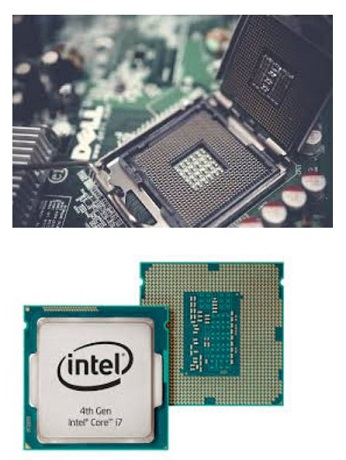

CPU

CPU, centralprocessor eller bara processor är datorns hjärna. Det är i processorn
som alla beräkningar görs. Processorn utför en sekvens av lagrade instruktioner,
som kallas för program. Pogramen är serier uttav tal som finns lagrade i något slags datorminne.
Processorn sätts fast med små stift eller med ”pluppar” i moderkortet, därför måste man se till att man har rätt sorts processor så att den kan fästas i sitt moderkort. Processoer ger ifrån sig väldigt mycket värme därför behövs det kylmekanismer ofta i form utav kylpasta som läggs på processorn.
En sak som avgör prestandan i en processor är hur många trådar och kärnor den har och hur snabb den är. Ju högre hastighet processorn har desto mindre tid tar det för den att utföra uppgifter. Man vill alltså ha en snabb processor med många trådar och kärnor. Det är alltså svårt att veta vad som är en bra eller dålig processor men ofta så kan man lita på priset då dyra processorer ofta är bättre.
Processorn sätts fast med små stift eller med ”pluppar” i moderkortet, därför måste man se till att man har rätt sorts processor så att den kan fästas i sitt moderkort. Processoer ger ifrån sig väldigt mycket värme därför behövs det kylmekanismer ofta i form utav kylpasta som läggs på processorn.
En sak som avgör prestandan i en processor är hur många trådar och kärnor den har och hur snabb den är. Ju högre hastighet processorn har desto mindre tid tar det för den att utföra uppgifter. Man vill alltså ha en snabb processor med många trådar och kärnor. Det är alltså svårt att veta vad som är en bra eller dålig processor men ofta så kan man lita på priset då dyra processorer ofta är bättre.